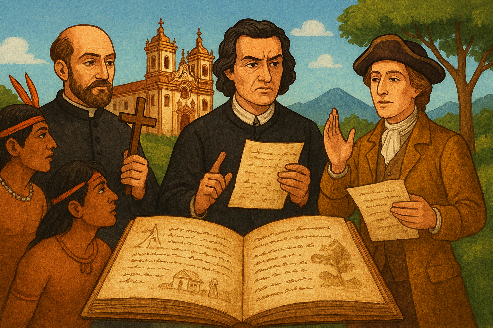

Literatura Colonial Brasileira: contexto, fases, características, autores e obras
A expressão Literatura Colonial Brasileira designa, de maneira didática, o conjunto de textos produzidos na América portuguesa ou relacionados a ela entre o início da colonização e as primeiras décadas do século XIX. Nesse período, surgiram cartas, relatos de viagem, textos religiosos, poemas, sermões, sátiras e obras de inspiração clássica.
Esses textos foram escritos em uma sociedade submetida à administração portuguesa, à escravidão, à catequese e a rígidas formas de circulação cultural. Por isso, devem ser estudados tanto por suas características literárias quanto pelas relações de poder e pelos interesses históricos presentes em sua produção.

Resumo da Literatura Colonial
- Período: do século XVI ao início do século XIX;
- Contexto: colonização portuguesa, catequese, escravidão e formação de centros urbanos;
- Primeiras manifestações: cartas, crônicas, descrições da terra e relatos de viagem;
- Literatura jesuítica: cartas, autos, poemas, sermões, diálogos e textos de catequese;
- Barroco: contrastes, argumentação, religiosidade, sátira e linguagem elaborada;
- Arcadismo: referências clássicas, pastoralismo, racionalidade e busca de equilíbrio;
- Autores importantes: Pero Vaz de Caminha, José de Anchieta, Gregório de Matos, Padre Antônio Vieira, Cláudio Manuel da Costa e Tomás Antônio Gonzaga;
- Questão crítica: ainda não existia um sistema literário nacional plenamente organizado nos moldes posteriores.
O que foi a Literatura Colonial Brasileira?
A Literatura Colonial reúne textos produzidos durante o período em que o território que mais tarde formaria o Brasil estava submetido ao domínio português. A expressão é útil para organizar o estudo, mas não significa que todos os autores já escrevessem em nome de uma nação brasileira independente.
Grande parte dessa produção estava ligada às instituições coloniais, à Igreja, à administração portuguesa e aos grupos letrados. Os textos circulavam entre a Colônia e a Europa, muitas vezes em manuscritos ou em livros impressos fora do território colonial.
A Literatura Colonial não constitui uma escola literária única. Ela reúne textos de períodos, finalidades, estilos e condições de circulação muito diferentes.
Literatura do Brasil ou literatura na América portuguesa?
A classificação desses textos como “literatura brasileira” é discutida pelos estudiosos. Para uma interpretação tradicional, eles representam as origens da literatura nacional. Em uma perspectiva histórica mais crítica, muitos pertencem ao universo cultural luso-brasileiro e foram produzidos antes da consolidação de uma identidade nacional.
Antonio Candido diferencia as manifestações literárias isoladas de um sistema literário formado pela relação contínua entre autores, obras, público e meios de circulação. Nessa perspectiva, os textos coloniais participam de um processo de formação, mas não constituem desde o início um sistema nacional plenamente articulado.
Perspectiva das origens: considera os textos coloniais os primeiros capítulos da história da literatura brasileira.
Perspectiva histórico-crítica: analisa esses textos dentro do mundo colonial português e evita projetar sobre eles uma nacionalidade ainda inexistente.
Atenção: chamar a Carta de Pero Vaz de Caminha de “certidão de nascimento do Brasil” é uma metáfora posterior. Em 1500, não existia o Brasil como Estado nacional independente.
Contexto histórico e cultural
A produção colonial foi condicionada pela ocupação portuguesa, pela exploração econômica, pela atuação missionária e pela escravização de indígenas e africanos. O acesso à leitura e à escrita era restrito, e não existia na Colônia um mercado editorial semelhante ao desenvolvido posteriormente.
Durante grande parte do período colonial, livros e textos impressos precisavam vir da Europa. A imprensa instalada oficialmente no Rio de Janeiro surgiu apenas em 1808, com a transferência da corte portuguesa. Antes disso, muitos textos circularam por meio de manuscritos, cópias ou edições impressas fora da Colônia.
| Data | Acontecimento | Relação com a produção escrita |
|---|---|---|
| 1500 | Chegada da expedição de Pedro Álvares Cabral | Produção da Carta de Pero Vaz de Caminha. |
| 1549 | Chegada dos primeiros jesuítas | Ampliação dos textos religiosos, pedagógicos e missionários. |
| 1601 | Publicação de Prosopopeia | Obra tradicionalmente relacionada ao início do Barroco colonial. |
| Século XVII | Economia açucareira e sociedade escravista | Contexto da poesia satírica, religiosa e da oratória sacra. |
| 1759 | Expulsão dos jesuítas dos domínios portugueses | Reorganização das instituições educacionais e religiosas. |
| 1768 | Publicação de Obras Poéticas, de Cláudio Manuel da Costa | Marco convencional do Arcadismo no Brasil. |
| 1789 | Inconfidência Mineira | Envolvimento ou acusação de intelectuais ligados ao ambiente árcade. |
| 1808 | Chegada da corte portuguesa e instalação da imprensa oficial | Ampliação da circulação de impressos e da vida cultural. |
| 1822 | Independência política do Brasil | Encerramento convencional do período colonial. |
Fases da Literatura Colonial
A divisão mais utilizada nos materiais escolares organiza a Literatura Colonial em quatro conjuntos: Literatura de Informação, Literatura Jesuítica, Barroco e Arcadismo.
| Fase | Período aproximado | Finalidades ou características | Autores representativos |
|---|---|---|---|
| Literatura de Informação | Século XVI | Descrição da terra, dos povos, dos recursos e das possibilidades de exploração. | Pero Vaz de Caminha, Pero de Magalhães Gândavo e Gabriel Soares de Sousa. |
| Literatura Jesuítica | Séculos XVI e XVII | Catequese, ensino religioso, comunicação missionária e produção teatral. | José de Anchieta e Manuel da Nóbrega. |
| Barroco | Século XVII e início do XVIII | Contrastes, religiosidade, retórica, sátira, antíteses e paradoxos. | Gregório de Matos e Padre Antônio Vieira. |
| Arcadismo | Segunda metade do século XVIII | Pastoralismo, referências clássicas, racionalidade, simplicidade idealizada e equilíbrio. | Cláudio Manuel da Costa, Tomás Antônio Gonzaga, Basílio da Gama e Santa Rita Durão. |
Literatura de Informação
A Literatura de Informação, também chamada de literatura dos viajantes ou literatura de expansão, reúne cartas, diários, tratados e relatos descritivos produzidos principalmente no século XVI.
Esses textos informavam à Coroa portuguesa e aos leitores europeus sobre a geografia, os recursos naturais, os povos originários e as possibilidades de ocupação e exploração da terra.
Embora muitos não tenham sido escritos com finalidade artística, são estudados pela história literária devido à construção de imagens, descrições, narrativas e representações que influenciaram interpretações posteriores do território.
Características da Literatura de Informação
- Descrição da fauna, da flora e da geografia;
- Registro dos povos indígenas a partir do olhar europeu;
- Informação sobre recursos e possibilidades econômicas;
- Presença de valores religiosos e coloniais;
- Comparação entre a nova terra e referências europeias;
- Alternância entre observação, admiração e interesse utilitário;
- Uso de cartas, crônicas, diários e tratados;
- Construção de imagens idealizadas ou estereotipadas.
A Carta de Pero Vaz de Caminha
Escrita em 1500 e dirigida ao rei D. Manuel I, a Carta de Pero Vaz de Caminha relata aspectos da chegada da expedição portuguesa às terras que seriam incorporadas ao domínio colonial.
Caminha descreve a paisagem, os habitantes e os primeiros contatos entre portugueses e indígenas. O texto combina observação, valores religiosos, curiosidade e expectativas relacionadas à ocupação da terra.
A Carta não oferece uma descrição neutra dos povos indígenas. Ela apresenta um olhar europeu, cristão e colonial, que interpreta o outro segundo referências e interesses portugueses.
Outros autores e obras informativas
- Pero de Magalhães Gândavo: autor de História da Província Santa Cruz, publicada em 1576;
- Gabriel Soares de Sousa: autor do Tratado Descritivo do Brasil, escrito em 1587;
- Fernão Cardim: autor de textos sobre a terra, os habitantes e a atuação missionária;
- Pero Lopes de Sousa: responsável por um diário relacionado à expedição de Martim Afonso de Sousa.
Valor documental: os relatos registram informações históricas, geográficas, linguísticas e culturais do período.
Limite crítico: esses registros foram produzidos principalmente pelo olhar de colonizadores, viajantes e missionários europeus.
Literatura Jesuítica
A Literatura Jesuítica desenvolveu-se com a atuação da Companhia de Jesus. Os primeiros jesuítas chegaram em 1549, acompanhando o governo-geral de Tomé de Sousa.
Sua produção incluía cartas, sermões, poemas, diálogos, gramáticas, catecismos e peças teatrais. Esses textos participavam do projeto de catequese e procuravam transmitir a doutrina cristã aos povos indígenas e aos habitantes da Colônia.
O uso de línguas indígenas e de recursos teatrais facilitava a comunicação, mas também integrava um processo de transformação cultural e religiosa relacionado à colonização.
Características da Literatura Jesuítica
- Finalidade religiosa e pedagógica;
- Defesa da doutrina cristã;
- Produção de autos teatrais e poemas religiosos;
- Utilização de português, latim e línguas indígenas;
- Adaptação de recursos locais à catequese;
- Representação cristã do bem, do mal, do pecado e da salvação;
- Registro das atividades missionárias;
- Participação no processo de colonização cultural.
José de Anchieta
José de Anchieta foi missionário, professor, dramaturgo, poeta e estudioso de línguas indígenas. Produziu textos em português, espanhol, latim e tupi.
Seus autos utilizavam música, diálogo e representação teatral para ensinar princípios cristãos. Entre os textos relacionados ao autor estão o Auto de São Lourenço e a Arte de Gramática da Língua Mais Usada na Costa do Brasil, publicada em 1595.
Manuel da Nóbrega
Manuel da Nóbrega foi um dos principais organizadores da missão jesuítica. Suas cartas registram dificuldades, estratégias e conflitos enfrentados pelos religiosos.
O Diálogo sobre a Conversão do Gentio discute métodos de catequese e revela como os missionários interpretavam os povos indígenas a partir de valores cristãos e europeus.
Os textos jesuíticos devem ser estudados simultaneamente como produção religiosa, experiência linguística e instrumento do projeto colonial.
Barroco no Brasil Colonial
O Barroco desenvolveu-se em uma sociedade marcada pela religiosidade católica, pela escravidão, pelas hierarquias coloniais e pelas disputas econômicas e políticas.
A produção barroca explora tensões como corpo e espírito, pecado e perdão, aparência e essência, vida e morte. Sua linguagem utiliza antíteses, paradoxos, metáforas, hipérboles e argumentação retórica.
A publicação de Prosopopeia, de Bento Teixeira, em 1601, é tradicionalmente utilizada como marco inicial do Barroco no Brasil. Essa divisão, entretanto, é uma construção posterior da historiografia literária.
Características do Barroco
- Dualismo e conflito;
- Religiosidade e consciência do pecado;
- Uso de antíteses e paradoxos;
- Linguagem metafórica e elaborada;
- Preocupação com a persuasão;
- Consciência da passagem do tempo;
- Contraste entre matéria e espírito;
- Presença de poesia religiosa, amorosa e satírica.
Cultismo e conceptismo
Cultismo: concentra-se nos efeitos da linguagem, nas metáforas, nas imagens, nos jogos de palavras e na elaboração formal.
Conceptismo: concentra-se na argumentação, no raciocínio, nas relações lógicas e na capacidade de persuadir o público.
A distinção é didática. Um mesmo texto pode combinar recursos cultistas e conceptistas.
Gregório de Matos
Gregório de Matos é um dos nomes centrais da poesia barroca produzida na Bahia. Sua obra reúne poemas religiosos, amorosos, satíricos e de circunstância.
A poesia satírica critica autoridades, membros do clero, comerciantes e costumes da sociedade colonial. Entretanto, também pode reproduzir preconceitos raciais, sociais e misóginos do período, o que exige leitura histórica e crítica.
Os poemas circularam principalmente em manuscritos e foram reunidos editorialmente muito tempo depois. Por isso, existem questões relacionadas à transmissão e à atribuição de alguns textos.
Padre Antônio Vieira
Padre Antônio Vieira destacou-se pela oratória e pela elaboração argumentativa de seus sermões. Embora tenha nascido em Portugal, viveu durante muitos anos na América portuguesa e participou intensamente de questões religiosas e políticas relacionadas à Colônia.
Seus sermões empregam comparações, exemplos bíblicos, perguntas retóricas, encadeamento lógico e jogos conceituais. Entre os textos mais estudados estão o Sermão da Sexagésima e o Sermão de Santo Antônio aos Peixes.
Vieira criticou determinadas formas de exploração e escravização indígena, mas sua atuação deve ser compreendida dentro das contradições políticas, religiosas e coloniais do século XVII.
Arcadismo no Brasil Colonial
O Arcadismo, também chamado de Neoclassicismo, desenvolveu-se na segunda metade do século XVIII. O movimento dialogou com o Iluminismo, com a tradição greco-latina e com a busca de clareza e equilíbrio.
No Brasil, o Arcadismo esteve fortemente ligado ao ambiente letrado de Minas Gerais, enriquecido pela mineração e marcado por transformações econômicas e políticas. A publicação de Obras Poéticas, de Cláudio Manuel da Costa, em 1768, é utilizada como marco convencional do movimento.
Características do Arcadismo
- Pastoralismo: representação idealizada da vida no campo;
- Bucolismo: valorização da natureza tranquila e harmoniosa;
- Racionalismo: busca de clareza, ordem e equilíbrio;
- Referências clássicas: diálogo com autores e mitos greco-latinos;
- Pseudônimos pastoris: adoção de nomes de pastores;
- Fugere urbem: ideal de afastamento da vida urbana;
- Locus amoenus: representação de um lugar natural agradável;
- Aurea mediocritas: valorização de uma vida equilibrada;
- Carpe diem: aproveitamento consciente do presente;
- Formalidade regular: preferência por estruturas claras e ordenadas.
Cláudio Manuel da Costa
Cláudio Manuel da Costa, cujo pseudônimo pastoril era Glauceste Satúrnio, é considerado um dos principais introdutores do Arcadismo no Brasil.
Sua poesia combina convenções pastoris com imagens da paisagem mineira. Essa combinação cria tensões entre a natureza idealizada da tradição clássica e o ambiente rochoso de Minas Gerais.
Tomás Antônio Gonzaga
Tomás Antônio Gonzaga adotou o nome pastoril Dirceu. Em Marília de Dirceu, o eu lírico apresenta projetos amorosos, imagens bucólicas, reflexões sobre o tempo e desejos de uma vida equilibrada.
Também é tradicionalmente atribuída a Gonzaga a autoria das Cartas Chilenas, poemas satíricos que criticam práticas administrativas e abusos de poder em Vila Rica por meio de personagens e lugares fictícios.
Basílio da Gama e Santa Rita Durão
Basílio da Gama escreveu O Uraguai, publicado em 1769. O poema aborda conflitos relacionados às missões jesuíticas e às populações indígenas no sul da América.
Santa Rita Durão publicou Caramuru em 1781. O poema reelabora narrativamente o contato entre europeus e indígenas e participa da construção colonial de imagens sobre o território e seus habitantes.
A presença de personagens indígenas em obras árcades não significa que esses textos expressem diretamente a perspectiva dos povos originários. As representações são construídas por autores letrados dentro de convenções europeias.
Barroco e Arcadismo: principais diferenças
Barroco: conflito, contraste, religiosidade intensa, linguagem ornamentada, antíteses, paradoxos e preocupação com a persuasão.
Arcadismo: equilíbrio, clareza, pastoralismo, referências clássicas, racionalidade e busca de simplicidade formal.
| Aspecto | Barroco | Arcadismo |
|---|---|---|
| Visão de mundo | Conflituosa e marcada por dualidades | Racional, equilibrada e idealizada |
| Linguagem | Elaborada, contrastante e persuasiva | Mais clara, ordenada e regular |
| Temas | Pecado, salvação, morte, instabilidade e crítica social | Natureza, vida simples, amor, equilíbrio e referências clássicas |
| Recursos | Antítese, paradoxo, metáfora e hipérbole | Pastoralismo, pseudônimos, mitologia e convenções latinas |
| Autores | Gregório de Matos e Padre Antônio Vieira | Cláudio Manuel da Costa e Tomás Antônio Gonzaga |
Autores e obras fundamentais
| Autor | Obra ou produção | Fase | Destaque |
|---|---|---|---|
| Pero Vaz de Caminha | Carta a el-rei D. Manuel | Literatura de Informação | Descrição da terra e dos primeiros contatos. |
| José de Anchieta | Autos, poemas e textos linguísticos | Literatura Jesuítica | Catequese, teatro e estudo de línguas indígenas. |
| Bento Teixeira | Prosopopeia (1601) | Barroco | Marco convencional do Barroco no Brasil. |
| Gregório de Matos | Poesia religiosa, amorosa e satírica | Barroco | Contrastes, religiosidade e crítica aos costumes coloniais. |
| Padre Antônio Vieira | Sermões, cartas e textos políticos | Barroco | Argumentação, conceptismo e retórica sacra. |
| Cláudio Manuel da Costa | Obras Poéticas (1768) | Arcadismo | Convenções pastoris e paisagem mineira. |
| Tomás Antônio Gonzaga | Marília de Dirceu e Cartas Chilenas | Arcadismo | Lírica amorosa, pastoralismo e sátira política. |
| Basílio da Gama | O Uraguai (1769) | Arcadismo | Poema sobre conflitos missionários e coloniais. |
| Santa Rita Durão | Caramuru (1781) | Arcadismo | Poema épico sobre contatos coloniais. |
Leitura crítica da Literatura Colonial
Durante muito tempo, os textos coloniais foram estudados principalmente como antecedentes da literatura nacional. Atualmente, também são analisados como discursos que participaram da colonização e da construção de imagens sobre a terra e seus habitantes.
A descrição de povos indígenas como seres disponíveis à conversão, por exemplo, servia a objetivos religiosos e políticos. Da mesma forma, a exaltação das riquezas naturais podia estimular a ocupação e a exploração econômica.
Também é necessário considerar que o cânone colonial privilegiou textos escritos em português ou em línguas europeias. Tradições orais indígenas e africanas foram frequentemente marginalizadas pelos registros oficiais e pela historiografia literária.
Leitura estética: analisa gêneros, recursos expressivos, estilos, formas poéticas e procedimentos retóricos.
Leitura histórica: examina autoria, circulação, catequese, escravidão, interesses coloniais e relações de poder.
Estudar a Literatura Colonial exige observar simultaneamente a forma dos textos e as condições históricas em que eles foram produzidos.
Como os textos circulavam?
A circulação de textos era limitada pela ausência de imprensa, pela baixa alfabetização e pelo controle político e religioso. Muitos escritos permaneciam em arquivos administrativos ou religiosos, circulavam em cópias manuscritas ou eram enviados à Europa.
A poesia de Gregório de Matos, por exemplo, circulou principalmente em manuscritos. As Cartas Chilenas também circularam dessa maneira antes de receberem edições impressas.
A instalação da Impressão Régia em 1808 modificou esse cenário, ampliando gradualmente a circulação de jornais, documentos e livros. Esse processo ajudou a criar condições para a vida literária do século XIX.
Importância e legado
- Registrou diferentes momentos da ocupação colonial;
- Construiu imagens duradouras sobre a terra e seus habitantes;
- Introduziu gêneros como carta, crônica, sermão, auto e poema épico;
- Desenvolveu experiências de escrita em português, latim e línguas indígenas;
- Revelou conflitos religiosos, políticos e sociais da Colônia;
- Produziu obras fundamentais do Barroco e do Arcadismo;
- Participou da formação gradual de um público e de uma tradição letrada;
- Ofereceu temas posteriormente retomados pelo Romantismo e pelo Modernismo.
Erros comuns sobre Literatura Colonial
- Tratar o período como uma escola única: a Literatura Colonial reúne diferentes manifestações e estilos;
- Afirmar que todos os textos tinham intenção artística: muitos apresentavam finalidade administrativa, informativa ou religiosa;
- Considerar a Carta uma descrição neutra: ela expressa um olhar europeu e colonial;
- Confundir Literatura de Informação e Jesuítica: elas podem coexistir, mas possuem finalidades predominantes diferentes;
- Reduzir o Barroco à linguagem difícil: o movimento envolve retórica, persuasão, religiosidade e conflitos históricos;
- Considerar o Arcadismo uma representação real da vida rural: seu campo é uma convenção literária idealizada;
- Projetar uma identidade nacional pronta sobre o século XVI: o Brasil independente ainda não existia;
- Ignorar a oralidade indígena e africana: o cânone escrito não representa toda a produção cultural do período.
Como o tema aparece no Enem e nos vestibulares?
As questões costumam apresentar fragmentos de cartas, poemas, sermões ou textos críticos. O estudante deve relacionar a linguagem empregada à finalidade do texto e ao contexto colonial.
- Identificação do olhar europeu na Carta de Caminha;
- Análise da função informativa dos relatos de viagem;
- Reconhecimento da finalidade catequética dos textos jesuíticos;
- Identificação de antíteses e paradoxos barrocos;
- Distinção entre cultismo e conceptismo;
- Análise da sátira de Gregório de Matos;
- Reconhecimento das estratégias argumentativas de Vieira;
- Identificação do pastoralismo e das convenções árcades;
- Comparação entre Barroco e Arcadismo;
- Discussão da relação entre literatura e colonização.
Em textos coloniais, pergunte sempre: quem escreve, para quem escreve, com qual finalidade e a partir de quais valores?
Questões sobre Literatura Colonial
Resumo final
- A Literatura Colonial reúne textos produzidos ou relacionados à América portuguesa;
- Ela não constitui uma única escola literária;
- A Literatura de Informação descreveu a terra e seus habitantes pelo olhar europeu;
- A Literatura Jesuítica esteve relacionada à catequese e à colonização cultural;
- O Barroco explorou conflitos, religiosidade, sátira e persuasão;
- O Arcadismo valorizou pastoralismo, referências clássicas e equilíbrio;
- Gregório de Matos, Vieira, Cláudio Manuel e Gonzaga são autores fundamentais;
- Os textos devem ser analisados estética e historicamente.
Perguntas frequentes
O que foi a Literatura Colonial Brasileira?
Foi o conjunto de manifestações escritas produzidas na América portuguesa ou relacionadas a ela durante o período colonial.
Quais são as fases da Literatura Colonial?
A divisão didática mais utilizada apresenta Literatura de Informação, Literatura Jesuítica, Barroco e Arcadismo.
Qual foi o primeiro documento da Literatura Colonial?
A Carta de Pero Vaz de Caminha, escrita em 1500, é tradicionalmente apresentada como o primeiro documento relacionado à história literária do Brasil.
Qual é a diferença entre Literatura de Informação e Literatura Jesuítica?
A primeira possui finalidade predominantemente descritiva e administrativa; a segunda está diretamente ligada à catequese e ao ensino religioso.
Quais são os principais autores do Barroco brasileiro?
Gregório de Matos e Padre Antônio Vieira são os autores mais estudados do Barroco luso-brasileiro.
Quais são os principais autores do Arcadismo brasileiro?
Cláudio Manuel da Costa, Tomás Antônio Gonzaga, Basílio da Gama e Santa Rita Durão estão entre os principais autores.
A Literatura Colonial já era uma literatura nacional?
Essa questão é discutida. Muitos textos pertencem ao universo cultural luso-brasileiro e foram produzidos antes da formação de um sistema literário nacional plenamente organizado.
Por que estudar a Literatura Colonial?
Porque seus textos ajudam a compreender a formação da tradição escrita, as representações da Colônia e as relações entre literatura, religião e poder.
Conteúdos relacionados
- Barroco no Brasil: contexto, características, autores e obras
- Arcadismo no Brasil: características, autores e obras
- Romantismo na poesia brasileira
- Conteúdos de Literatura Brasileira
Conclusão
A Literatura Colonial Brasileira reúne manifestações muito diferentes, desde cartas e relatos de viagem até poemas, sermões, sátiras e obras árcades. Esses textos revelam transformações estéticas, mas também registram interesses religiosos, econômicos e políticos do mundo colonial.
Seu estudo permite compreender como se formaram tradições de escrita, leitura e circulação cultural na América portuguesa. Ao mesmo tempo, uma abordagem crítica ajuda a reconhecer os limites do olhar colonial e a ausência de muitas vozes indígenas, africanas e populares nos registros consagrados pelo cânone.
Referências
BOSI, Alfredo. História Concisa da Literatura Brasileira. São Paulo: Cultrix.
CANDIDO, Antonio. Formação da Literatura Brasileira: momentos decisivos. Rio de Janeiro: Ouro sobre Azul.
COUTINHO, Afrânio. Introdução à Literatura no Brasil. Rio de Janeiro: Bertrand Brasil.
HANSEN, João Adolfo. A sátira e o engenho: Gregório de Matos e a Bahia do século XVII. São Paulo: Companhia das Letras.
HOLANDA, Sérgio Buarque de. Capítulos de literatura colonial. São Paulo: Brasiliense.
LEITE, Serafim. História da Companhia de Jesus no Brasil. Lisboa: Portugália; Rio de Janeiro: Instituto Nacional do Livro.
PÉCORA, Alcir. Teatro do Sacramento: a unidade teológico-retórico-política dos sermões de Antônio Vieira. São Paulo: Edusp.
TEIXEIRA, Ivan. Mecenato pombalino e poesia neoclássica. São Paulo: Edusp.
Fundação Biblioteca Nacional — Literatura Colonial
Universidade de São Paulo — Excertos sobre a formação da literatura brasileira